License Management System
Documented by JABA IT -
LMS - License Management System
Introduction :
Overview
License Management System, that manages different services for Mopita site. This system simplifies the process to integrate a new service site into system. This system helps planners to design a webpage and insert the data into system. This system allows planners to set dynamic data of web page design so that engineers can easily develop web pages in code base. This system also operates service site. Service site allows user for a secure subscription process for a planner. This system also reduces engineers work. Engineers use AI tool to convert the design into code and utilizes planners dynamic data to make the web pages dynamic
In a summary, this system simplifies Mopita to integrate a service and planner can easily set dynamic data. Also reduce the development task by utilizing AI tool.
Technology
- Programming language: JS (Framework: NextJs)
- Database: Relational Database Management System (Azure Sql Service)
- Cloud service: Azure Web Service
- Design: Figma
- AI tool: Builder.io
Software & Tools
-
Software
- IDE: VS Code
- SQL Server: Microsoft SQL Server
-
Tools & Accounts:
- Azure service subscription
- Azure web services
- Azure SQL server
- Figma
- Buider.io
Installation :
Production installation
There are several processes to deploy project on Azure services. In this project deployment is done using tools like Microsoft SQL Server Management Studio and IDE (VS code).
-
Web App and Database Creation
-
Create Web App:
-
At first login to Azure Portal: Azure Portal
- Select a subscription
- Select a resource group
- Input instance name
- Select publish type
- Select runtime stack
- Select operating system
- Select region
- Select Linux plan
- Select Pricing plan
- Click review + create button
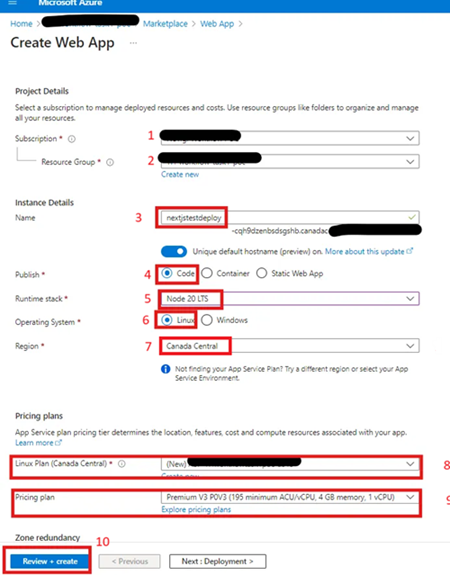
-
At first login to Azure Portal: Azure Portal
-
Create an Azure SQL Server:
-
Step-1:
- At first login to Azure Portal: Azure Portal
-
Step-2:
- In the Azure Portal, click on “Create a resource” and search for “SQL Server.”
- Select “SQL Server (logical server)” from the search results and click on “Create.”
- Choose the desired Subscription, Resource group (create a new one or select an existing one), Server name (should be unique) and Location.
- Set the Azure AD admin.
- Select the Authentication method and add the server admin login and password.
- Configure the additional settings, such as version, performance, and networking.
- Click on “Review + Create” and then “Create” to provision the Azure SQL Server. Wait for some time, as the azure will take some time for the deployment of the SQL Server.
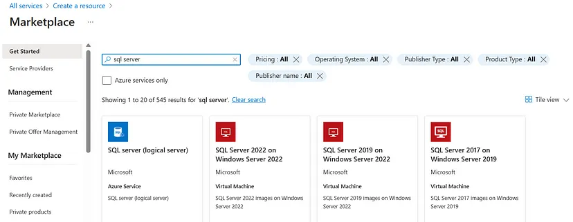
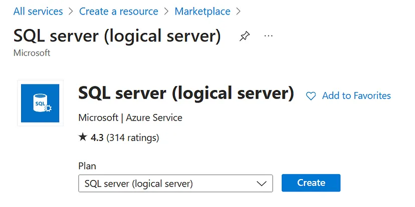
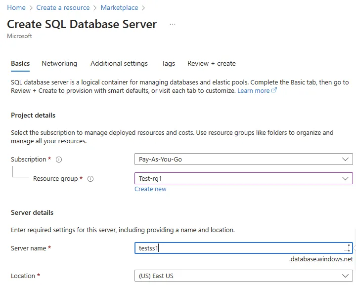
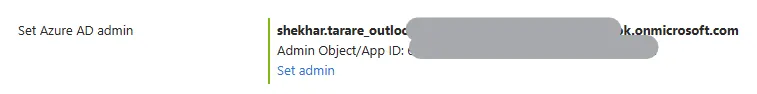
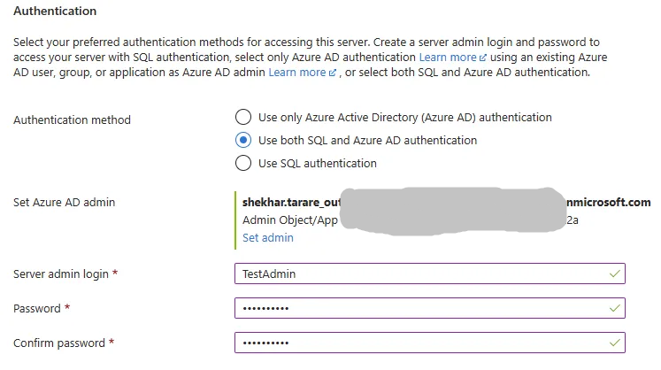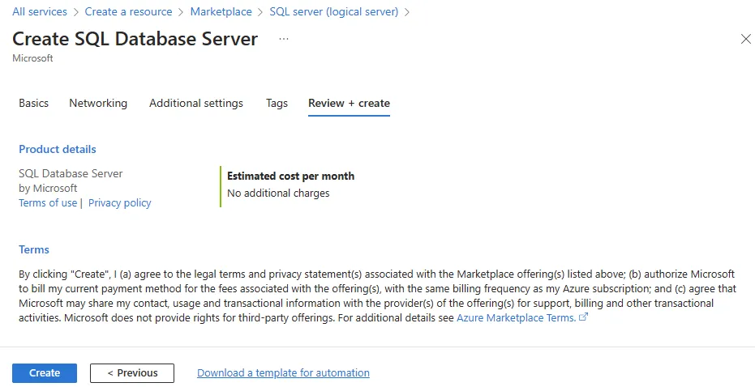 -
Step-3:
-
Configure firewall settings for Azure SQL Server
- In the Azure Portal, navigate to the resource group containing your SQL Server.
- Click on the SQL Server resource to open its overview page.
- In the left menu, under “Security,” click on “Networking”.
- Click on “Add your client IPv4 address” to add your current IP address to the firewall rules.
- If you require access from specific IP ranges or Azure services, you can configure additional firewall rules accordingly.
- Click on “Save” to apply the changes.
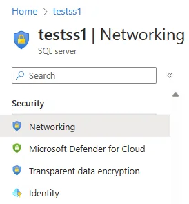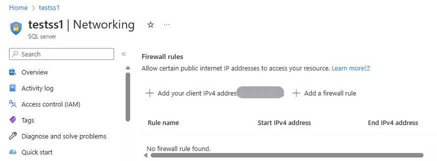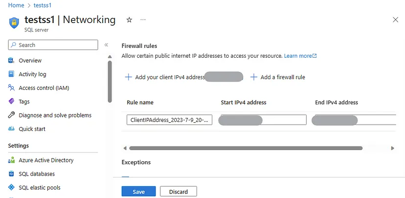
-
Configure firewall settings for Azure SQL Server
-
Step-4:
-
Create an azure database
- In the Azure Portal, navigate to your SQL Server resource.
- Click on “Create database” to initiate the database creation process.
- Provide a name for the database, select the workload environment, Compute + storage. For the testing, I have selected the Standard-series (Gen5).
- Desired source (blank database or sample), and configure additional settings such as collation and security.
- Click on “Create” to create the Azure Database. Wait for some time until azure finishes the deployment of the database.
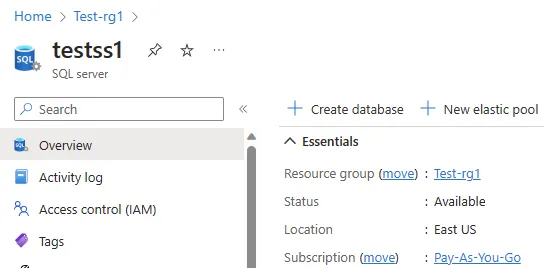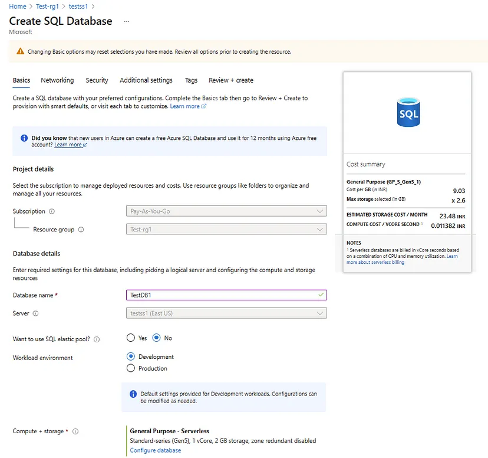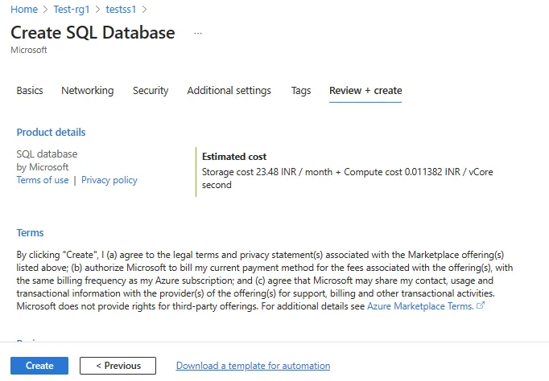
-
Create an azure database
-
Step-5:
-
Connect to Azure SQL Server using SSMS
To manage your Azure SQL Server and databases, you can use SQL Server Management Studio. Here’s how to connect to your Azure SQL Server using SSMS:- Download and install SQL Server Management Studio from the official Microsoft website (Download SQL Server Management Studio).
- Open SSMS and click on “Connect” to open the “Connect to Server” window.
- Fill in the necessary details.
- Click on “Connect” to establish a connection with your Azure SQL Server.
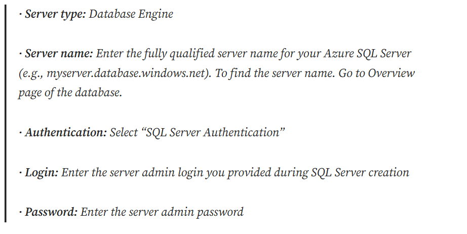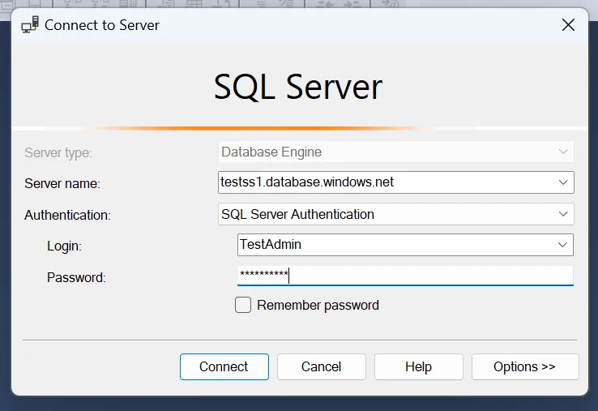
-
Connect to Azure SQL Server using SSMS
-
Step-6:
-
Upload DB to server
- Download script from this link below (Database Script)
- Run scripts by clicking on the execute button.
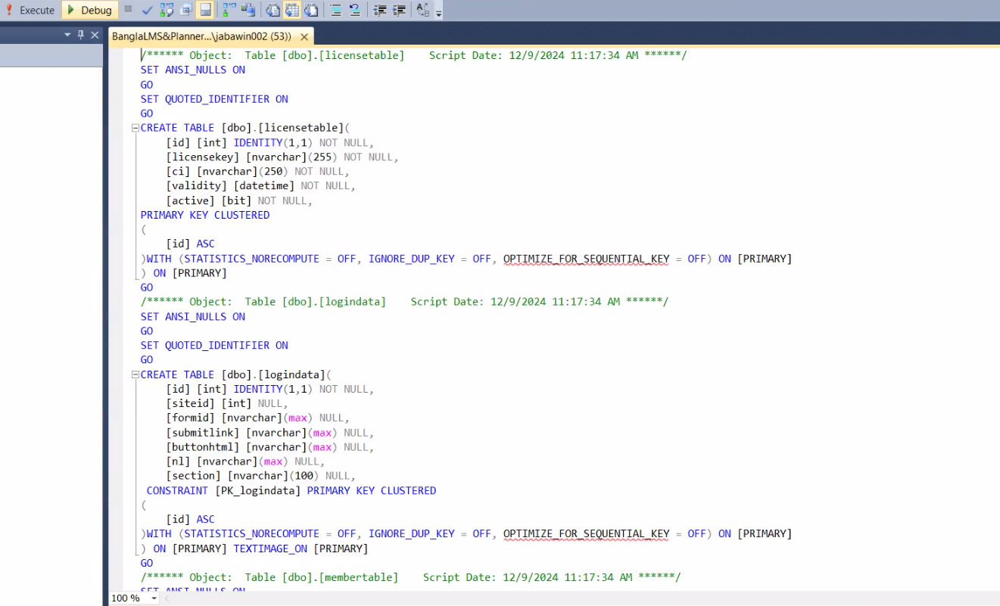
-
Upload DB to server
-
Step-1:
-
Create Web App:
Deploy Web App to Azure Server
- Request through support mail to get access for private git repository.
- After getting the access, download code and open in Visual Studio Code.
-
Change some configuration in the projects.
-
For License Management System, change in the .env file located in the project root folder.
- NEXT_PUBLIC_DB_USER (set DB user)
- NEXT_PUBLIC_DB_PASSWORD (set DB password)
- NEXT_PUBLIC_DB_SERVER (set DB server)
- NEXT_PUBLIC_DB_DATABASE (set DB name)

-
For Bangla LMS, change in the .env file located in the project root folder.
- NEXT_PUBLIC_DB_USER (set DB user)
- NEXT_PUBLIC_DB_PASSWORD (set DB password)
- NEXT_PUBLIC_DB_SERVER (set DB server)
- NEXT_PUBLIC_DB_DATABASE (set DB name)
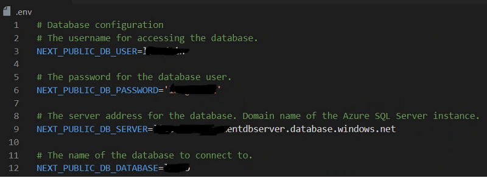
-
For License Management System, change in the .env file located in the project root folder.
- Install Azure tools extension in VS Code, it will install all the dependent extensions.
- Click on the Azure Icon from the left panel and sign in if not signed in yet.
- After singing in you can see the resource list
- Expand desired resource, then expand App Service.
- Select desired app service, then right click on the mouse and select Deploy to Web App option.
- Expand your desired service and then expand Deployments option to check deployment status.
Navigate the web app service:
-
Go to admin page
- < web-app URL >/admin
-
Admin Credentials
- ID: admin
- Password: LMS@admin